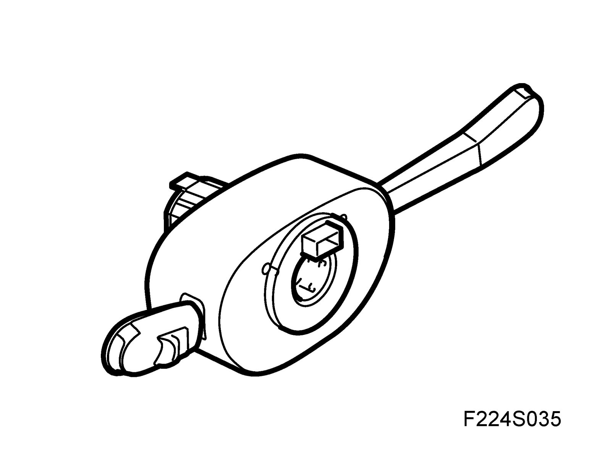
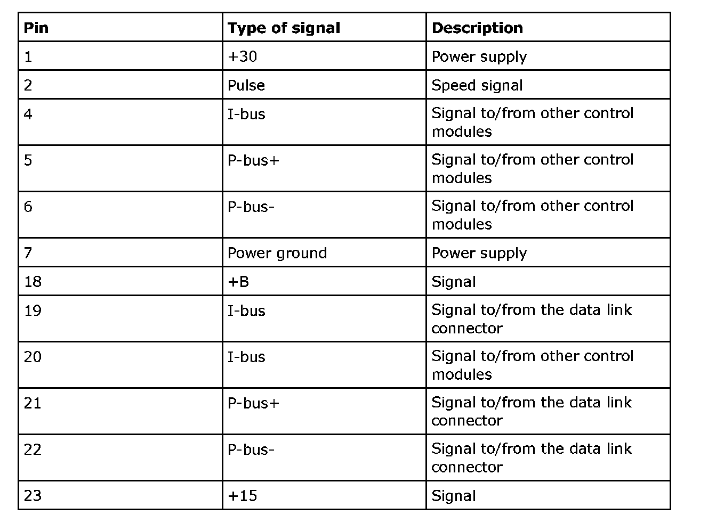
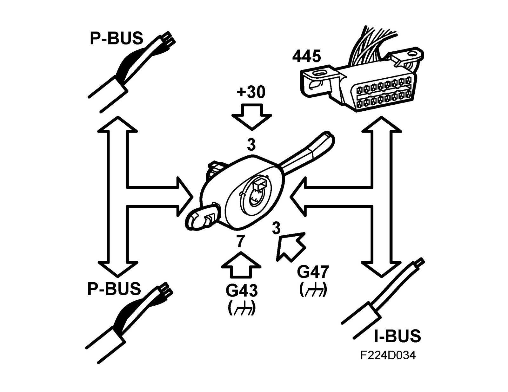
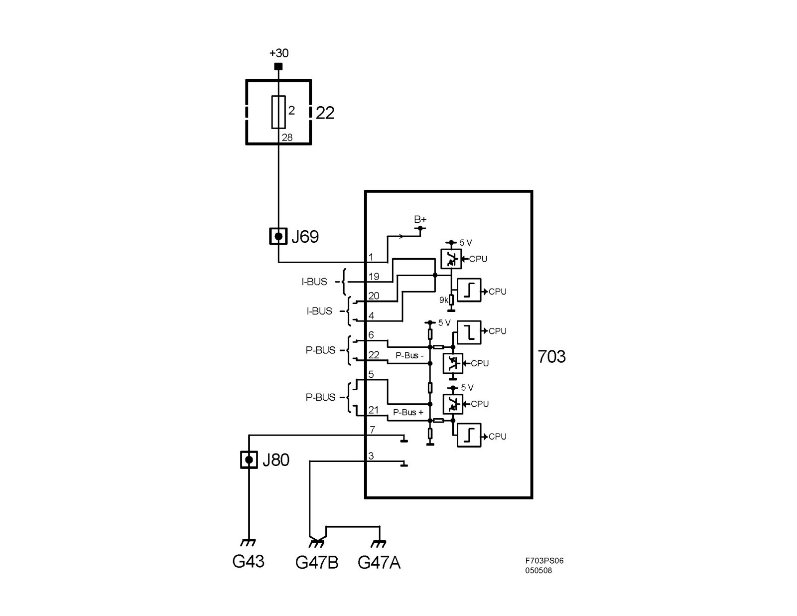
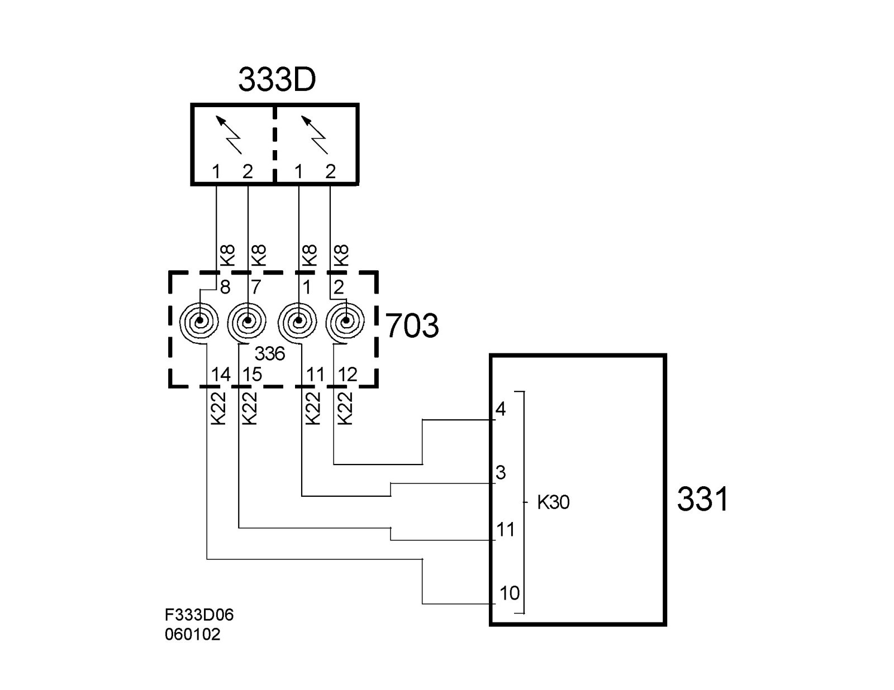
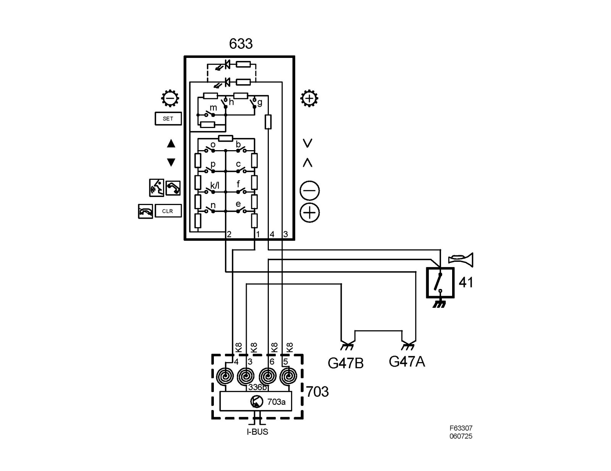

Steering Mounted Controls Communication Module: Description and Operation
Column Integration Module (CIM) (703)Location
Column Integration Module (CIM) (703)
Main use
The main uses of the Column Integration Module (CIM) include:
^ Disengaging vehicle immobilizer using a transponder in the key and a receiver in the ignition switch (ISM).
Read more about immobilization under brief or detailed description.
^ Controlling the steering column lock (SCL).
Read more, see Unit, steering column lock (SCL) (708), Steering column lock (SCL), brief description and Steering column lock (SCL), detailed description.
^ Receiving information from the ISM and sending key position information on the bus.
Read more, see Ignition Switch Module, ISM (20), Ignition switch (ISM), brief description and Ignition switch (ISM), detailed description.
^ Preventing the key from turning LOCK - ON before the SCL has been unlocked.
^ Preventing the key from turning LOCK - ON before the car has stopped with the selector lever in P or N.
^ Receiving radio signals from the integrated key remote control and sending a message on the bus regarding which button has been pressed.
^ Reading the steering wheel levers and steering wheel button positions and sending information on the bus.
^ Transferring current to the two driver airbag detonation circuits.
^ Sends current steering wheel angle on the bus.
^ Acting as a transfer point between the P-bus and the I-bus.
^ Connecting the P-bus and the I-bus to the data link connector.
Type
Control module, general description
CIM is a complete unit that integrates the traditional steering column covers, steering wheel levers and steering wheel angle sensor. CIM includes also a remote control antenna and contact roller.

The stalks are replaceable and when the cruise control is fitted, the existing stalk is replaced by one with a cruise control button. CIM has a microprocessor with clock and memory. An internal bus connects the processor and memory with the I/O unit. The I/O unit is responsible for reading the values from the A/D converter for analogue inputs, digital inputs and bus, and for activating the transistors in the final stage.
Steering wheel angle sensor
The steering wheel angle sensor is fitted to a snap mounting inside the CIM and is directly connected to the circuit board with a 4-pin connector. The steering wheel angle sensor reads the steering wheel angle with a toothed wheel which meshes with the toothed inner sleeve of the contact roller.
The sensor contains 4 Hall sensors and a microprocessor. The CIM continuously sends steering wheel angle information on the bus. 0° corresponds to a straight ahead position; a value which increases when the steering wheel is turned to the left. The sensor must be calibrated after changing the straight ahead position of the steering wheel or steering wheel replacement. Sensor fault requires CIM replacement.
Power supply, ground and bus communication


Wiring diagram, power supply

Wiring diagram, steering wheel contact unit, airbag

Wiring diagram, steering wheel contact unit, horn/switch
